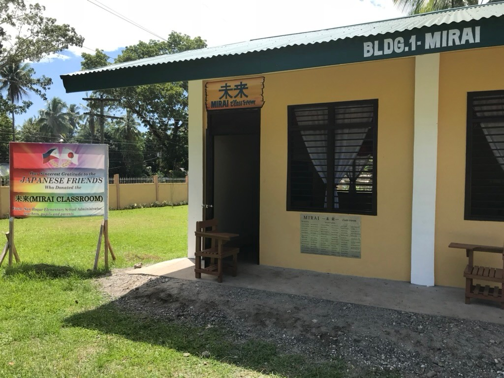
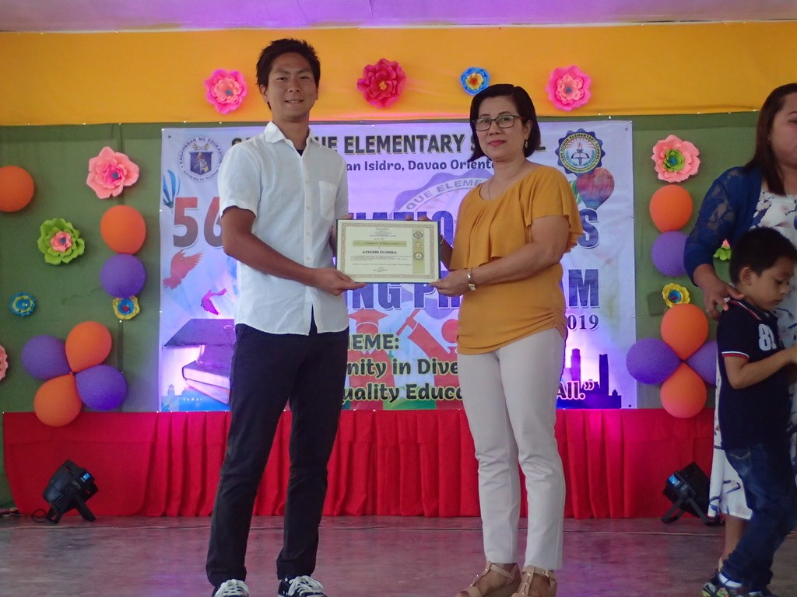
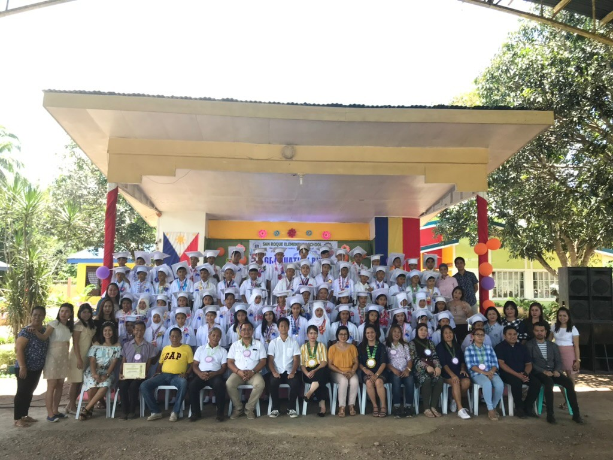
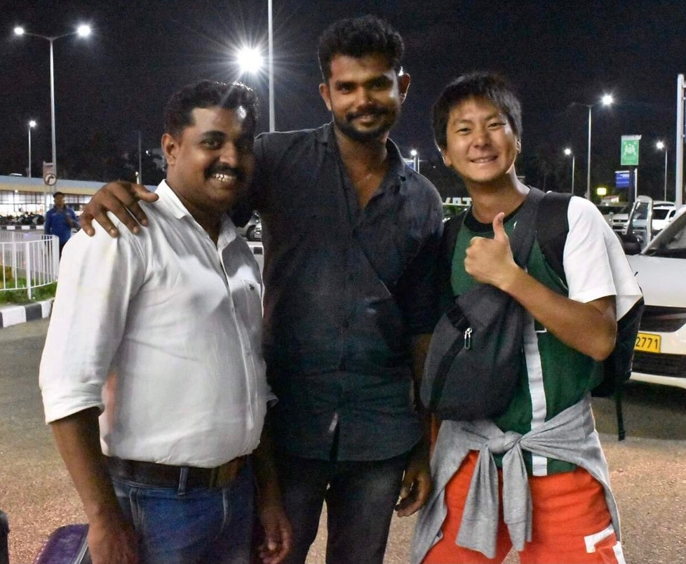
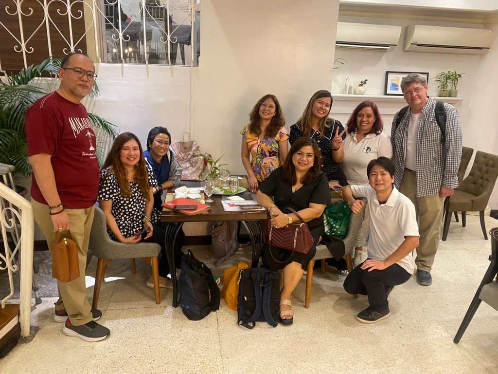
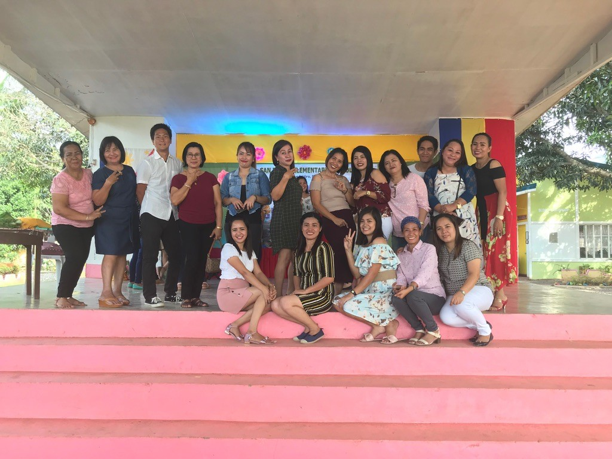

Photo Archive
FACES OF THE JOURNEY.活動の風景、
出会った人々。
一枚一枚に、場所と人との出会いがあります。本人提供の16枚から、これまでの活動をたどります。












写真は本人提供資料です。子ども・地域住民を含む写真は、一般公開前に写っている方や関係団体への二次利用許諾をご確認ください。
Photo Archive
一枚一枚に、場所と人との出会いがあります。本人提供の16枚から、これまでの活動をたどります。






写真は本人提供資料です。子ども・地域住民を含む写真は、一般公開前に写っている方や関係団体への二次利用許諾をご確認ください。